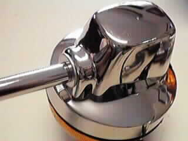

The Long stem, usually used on the rear of the bike, is 4 3/4" long, measured from the end of the stem to the base of the indicator. The short stem is 3" long
The Lucas indicators are no longer available. We chose not to stock the indicators made in England because they do not have the lucas logo on the lens or the body and are more expensive.
The short indicator has less threads on the stem than the long indicator and will not thread into the front Commando mount. Therefore we lengthen the threads on the stem of the short indicator for front fitment.
Pricing is current as of 02/12/21. The indicators shown, starting from the left:
- 99-1190E, Economy, Long Stem - DROPPED.
- 99-1190E/S, Economy, Short Stem - DROPPED.
- 99-1190E/SF, Short Stem with longer threads for front fitment - $70.76.

The left and smaller bullet is on the economy indicator. You will need to purchase the correct Lucas bullet (51-900269, $4.88) to plug this lens into the stock harness. The Lucas bullet, pictured on the right, is the correct bullet to plug into a stock harness.

This page was written and designed by F. H. Eaton & Associates if you have any questions or comments please contact us at eaton@oldbritts.com